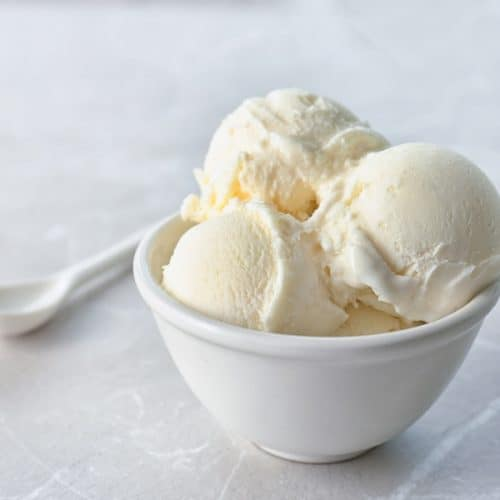

Vanilla Ice Cream

No cooking involved in this recipe for homemade ice cream using just cream, sugar, and vanilla with your ice cream maker. 3 hrs 30 min for 8 servings
Ingrediants
- 2 cups heavy whipping cream
- 2 cups half-and-half cream
- 3/4 cup white sugar
- 1 tablespoon vanilla extract
Steps
- In a large bowl, combine the heavy cream and the half and half. Gradually whisk in the sugar until blended.
- Whisk in the vanilla. Refrigerate, covered, until very cold, at leasts 3 hours or as long as 3 days.
- Whisk the mixture to blend and pour into the canister of an ice cream maker. Freeze according to the manufacturer's directions. Eat at once or transfer to a covered container and freeze up to 8 hours.